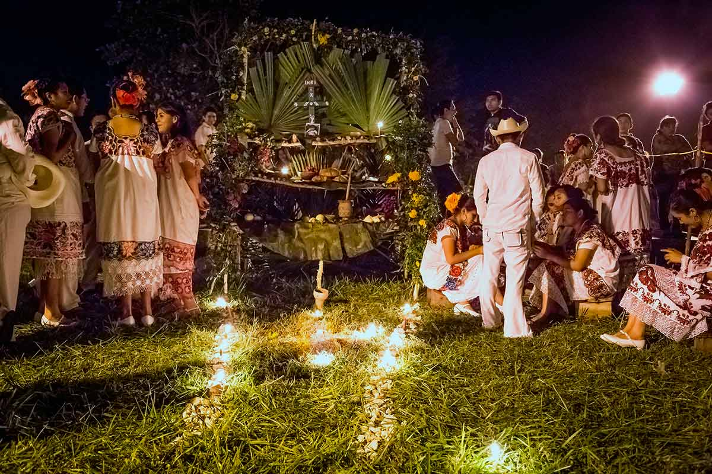

Costumbres
Las costumbres de Yucatán reflejan una rica mezcla de herencia maya y tradiciones coloniales. La familia y la comunidad son valores fundamentales, y se celebran festividades como el Hanal Pixán, una versión maya del Día de Muertos, donde se honra a los difuntos con altares y ofrendas. Las vaquerías son eventos tradicionales con música, baile y comida típica. La artesanía, la música regional y el respeto por las tradiciones religiosas también forman parte importante de la identidad yucateca.